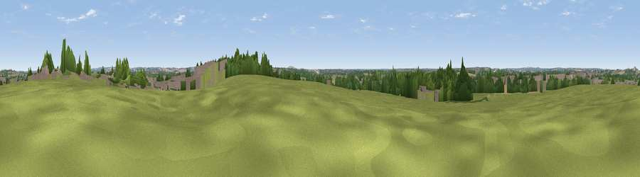

Viewpoint near Water Orton
#38651 in England · top 58% of its area beats it · near Water Orton · path 66 mWhere it is
The exact computed spot (SP 19175 90375). Click the marker for map links.
Public access: the nearest public right of way is about 66 m away — the final stretch may cross private land. Computed from Natural England's CRoW access layer and OpenStreetMap rights of way — not the legal definitive map. Always verify locally.
The view, rendered

A 360° render of this exact spot computed from the terrain model, tree cover and land cover — summer colours, afternoon light, calibrated against photographs of famous viewpoints. Real trees, hedges and buildings will differ in detail.
The panorama
Grey silhouette: terrain skyline in each direction (720 bearings, Earth curvature and refraction included). Dashed green: skyline with trees (+15 m) and buildings (+8 m) as obstacles. Blue strip: how far the ground is visible on each bearing.
Where the view opens
Wedge length = distance to the farthest visible ground on that bearing (vegetation-aware). Rings at 10, 25 and 50 km.
What fills the view
47% grassland · 24% built-up · 22% woodland · 7% cropland
Angular shares of the visible panorama (visual magnitude), not map area. Landscape diversity 0.54 (0–1 Shannon).
Key numbers
More beautiful places nearby
The staircase of upgrades: each row has a higher view potential than everything closer. Driving times are estimates from straight-line distance, calibrated against real road routing — check an actual route before setting out.
| Place | Direction | Drive | Score |
|---|---|---|---|
| Viewpoint near Coleshill Heath | SSE · 6 km | ~12 min | 51.6 |
| Viewpoint near Ansley Common | ENE · 12 km | ~23 min | 69.0 |
| Viewpoint near Streetly | WNW · 15 km | ~27 min | 69.5 |
| Windmill Hill | WSW · 25 km | ~41 min | 73.2 |
| Viewpoint near Clent | WSW · 27 km | ~44 min | 73.8 |
| Viewpoint near Clent | WSW · 28 km | ~44 min | 74.3 |
| Viewpoint near Stanton under Bardon | NE · 35 km | ~54 min | 76.0 |
| Viewpoint near Woodhouse Eaves | NE · 40 km | ~59 min | 77.7 |
52.51093, -1.71890 · source: screening · position refined by local search. Computed location — check access rights before visiting.